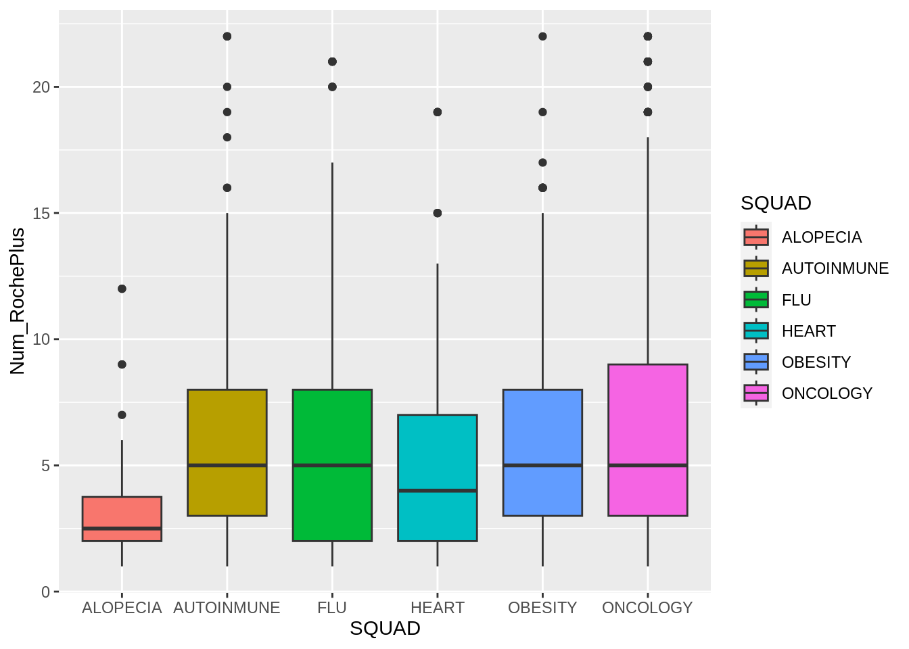
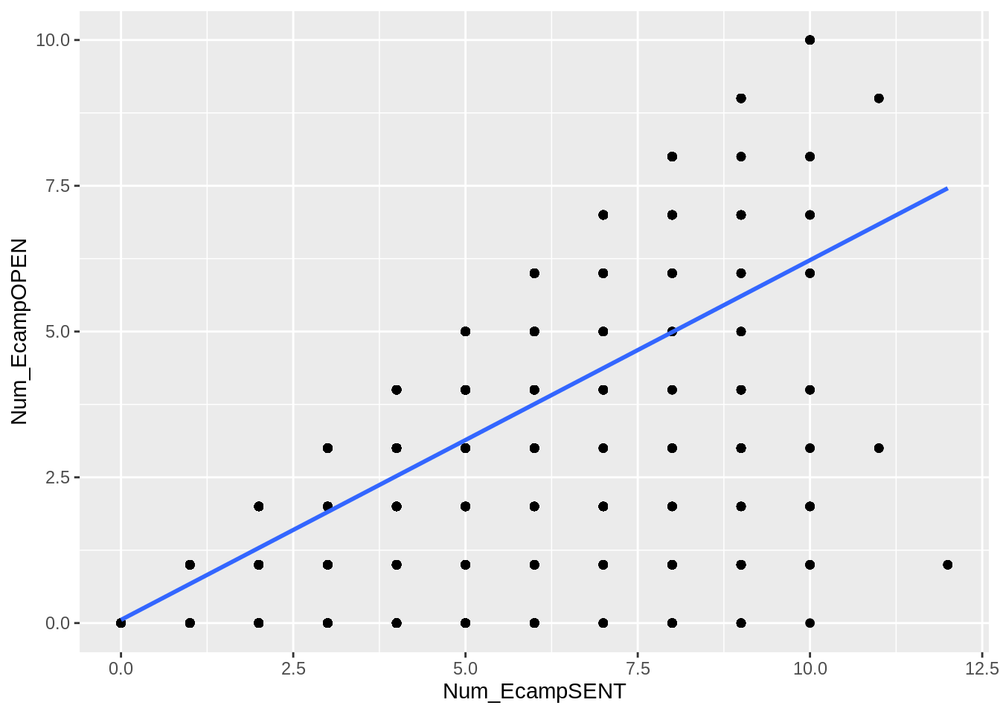

Curso de introducción al análisis de datos con R de Roche
Ejercicios Resueltos
Para la realización de esta práctica se requieren los siguientes paquetes:
library(tidyverse)# Incluye los siguientes paquetes:# - dplyr: para el preprocesamiento y manipulación de datos.# - ggplot2: para la creación de gráficos.library(broom) # para convertir las listas con los resúmenes de los modelos de regresión a formato organizado.library(vtable) # para la visualización de tablas.library(GGally) # para la creación de gráficos de pares.library(knitr) # para el formateo de tablas.
Ejercicio 1 Cargar el conjunto de datos de roche en un data frame. Mostrar sus variables (columnas) y las primeras filas.
Solución
library(tidyverse)library(vtable)library(knitr)# Carga del data framedf <-read.csv("datos/datos-roche.csv", stringsAsFactors = T)# Mostrar las variablesvt(df)
df
Name
Class
Values
ZONA
factor
'CENTRO' 'LEVANTE' 'NORESTE' 'NORTE' 'SUR'
ID_MÉDICO
factor
'001690000339pi7AAA' '001690000339pi8AAA' '001690000339tjFAAQ' '001690000339tjGAAQ' '001690000339tyhAAA' and 6953 more
SQUAD
factor
'ALOPECIA' 'AUTOINMUNE' 'FLU' 'HEART' 'OBESITY' and 1 more
INDICACIÓN
factor
'ALOPECIA ANDROGÉNICA' 'ALOPECIA AREATA' 'ARTEROPATÍA CORONARIA' 'CÁNCER DE CORAZÓN' 'CANCER DE GLÁNDULA SALIVAL' and 11 more
GP
factor
'P1' 'P2' 'P3' 'P5' 'UNKNOWN'
ES_TAE
factor
'NO' 'SI'
CONSENT.PROFILING
factor
'No' 'Si' 'Sin Respuesta'
CONSENT.EMAIL
factor
'' 'Consent recieved' 'Kai Wang'
Q
factor
'Q1 2024' 'Q2 2023' 'Q3 2023' 'Q4 2023'
MAX.GP
factor
'P1' 'P2' 'P3' 'P5' 'UNKNOWN'
TAE_max
factor
'Clinician' 'Emerging TAE' 'International' 'National' 'No TAE' and 2 more
Ejercicio 2 Crear una nueva variable con el total de veces que el médico ha sido visitado virtual o presencialmente. Mostrar las primeras filas de la variable creada.
Ejercicio 3 Crear una nueva variable con el total de veces que el médico ha interactuado por algún medio. Mostrar las primeras filas de la variable creada.
Ejercicio 6 Filtrar el conjunto de datos para quedarse con los médicos expertos en oncología de la zona centro que han sido visitados al menos dos veces. ¿Cuántos médicos cumplen con estas condiciones?
Ejercicio 7 Eliminar de la base de datos los médicos que no han tenido ninguna interacción. ¿Cuántos médicos quedan en la base de datos?
Solución
df <- df |>filter(total_interacciones >0)nrow(df)
[1] 32748
Ejercicio 8 Mostrar la tabla de frecuencias de los equipos (squad). Mostrar también la tabla de frecuencias de las especialidades agrupadas por equipos.
Solución
df |>count(SQUAD) |>kable()
SQUAD
n
ALOPECIA
1235
AUTOINMUNE
1310
FLU
5951
HEART
7369
OBESITY
4738
ONCOLOGY
12145
df |>count(SQUAD, INDICACIÓN) |>kable()
SQUAD
INDICACIÓN
n
ALOPECIA
ALOPECIA ANDROGÉNICA
177
ALOPECIA
ALOPECIA AREATA
1058
AUTOINMUNE
CELIAQUÍA
27
AUTOINMUNE
ENFERMEDAD DE GRAVES
796
AUTOINMUNE
LUPUS
487
FLU
GRIPE A
629
FLU
GRIPE B
44
FLU
GRIPE C
1492
FLU
GRIPE D
3786
HEART
ARTEROPATÍA CORONARIA
3730
HEART
MIOCARDIOPATÍA
3639
OBESITY
OBESIDAD
4738
ONCOLOGY
CÁNCER DE CORAZÓN
4045
ONCOLOGY
CANCER DE GLÁNDULA SALIVAL
431
ONCOLOGY
CANCER DE OIDO
3561
ONCOLOGY
CANCER NASAL
4108
Ejercicio 9 Dibujar el diagrama de barras de las especialidades. ¿Qué especialidad es la más frecuente? Dibujar también el diagrama de barras de las especialidades coloreando las barras según el equipo.
Solución
df |>ggplot(aes(x = INDICACIÓN, fill = SQUAD)) +geom_bar()
Ejercicio 10 Dibujar el diagrama de barras con el número de visitas presenciales y virtuales de cada grupo. ¿Qué grupo ha tenido un mayor número de visitas presenciales? ¿Y de visitas virtuales?
Ejercicio 11 Dibujar un histograma del número de visitas a la página web de Roche para médicos, eliminando los médicos que no han visitado la página web.
Solución
df |>filter(Num_RochePlus >0) |>ggplot(aes(x = Num_RochePlus)) +geom_histogram(col ="white", fill ="steelblue")
Ejercicio 12 Dibujar el diagrama de cajas del número de visitas a la página web de Roche para médicos, eliminando los médicos que no han visitado la página web.
¿Existen datos atípicos? Eliminar el 5% de los datos atípicos más extremos y volver a dibujar el diagrama de cajas.
Ejercicio 13 Dibujar el diagram de cajas del número de visitas a la página web de Roche para médicos, eliminando los médicos que no han visitado la página web y agrupando según el equipo. ¿Qué equipo tiene un mayor número de visitas a la página web?
Solución
df |>filter(Num_RochePlus >0) |>filter(Num_RochePlus <quantile(Num_RochePlus, 0.95)) |>ggplot(aes(x = SQUAD, y = Num_RochePlus, fill = SQUAD)) +geom_boxplot()

Ejercicio 14 Realizar un resumen descriptivo de las variables numéricas del conjunto de datos.
Solución
df |>select_if(is.numeric) |>st()
Summary Statistics
Variable
N
Mean
Std. Dev.
Min
Pctl. 25
Pctl. 75
Max
Num_VisitaF2F
32748
1.8
2.1
0
0
3
19
Num_EventoF2F
32748
0.39
0.68
0
0
1
6
Num_VisitaVirtual
32748
0.3
0.85
0
0
0
14
Num_EcampOPEN
32748
0.69
1.3
0
0
1
10
Num_EcampSENT
32748
1
1.8
0
0
2
12
Num_EventoVirt
32748
0.07
0.28
0
0
0
3
Num_NLCLICK
32748
0.018
0.2
0
0
0
8
Num_NLSENT
32748
0.28
1.3
0
0
0
14
Num_Elearning
32748
0
0
0
0
0
0
Num_RochePlus
32748
0.57
3
0
0
0
130
total_visitas
32748
2.1
2.3
0
0
3
27
total_interacciones
32748
3.9
4.1
1
1
5
143
total_criterios
32748
1.6
0.89
0
1
2
7
Ejercicio 15 Realizar un resumen descriptivo con la media y la desviación típica del número de visitas presenciales y virtuales agrupadas por equipo.
Solución
st(df, vars =c("Num_VisitaF2F", "Num_VisitaVirtual"), group ="SQUAD", summ =c('mean(x)', 'sd(x)'),summ.names =c("Media", "Desv. típica"))
Ejercicio 16 Dibujar el diagrama de dispersión entre el número de correos electrónicos enviados y el número de correos electrónicos abiertos. ¿Existe alguna relación entre estas dos variables?
Solución
df |>ggplot(aes(x = Num_EcampSENT, y = Num_EcampOPEN)) +geom_point()
Ejercicio 17 Dibujar los diagramas de dispersión de todas las variables numéricas del conjunto de datos. ¿Existe alguna relación entre las variables?
Ejercicio 18 Calcular la recta de regresión del número de correos electrónicos abiertos sobre el número de correos electrónicos enviados. ¿Cuál es la tasa de apertura de correos electrónicos?
Solución
library(broom)modelo <-lm(Num_EcampOPEN ~ Num_EcampSENT, data = df)modelo |>tidy() |>kable()
term
estimate
std.error
statistic
p.value
(Intercept)
0.0550391
0.0047329
11.62892
0
Num_EcampSENT
0.6169510
0.0023177
266.19462
0
La tasa de apertura de correos electrónicos es la pendiente de la recta de regresión, es decir, el coeficiente de la variable Num_EcampSENT que vale 0.5664, o lo que es lo mismo, el 56.64%.
Dibujar la recta de regresión sobre el diagrama de dispersión.
Solución
df |>ggplot(aes(x = Num_EcampSENT, y = Num_EcampOPEN)) +geom_point() +geom_smooth(method ="lm", se =FALSE)

Ejercicio 19 Calcular la recta de regresión del número de correos electrónicos abiertos sobre el número de correos electrónicos enviados para cada equipo. ¿En qué equipo la tasa de apertura de correos electrónicos es mayor?